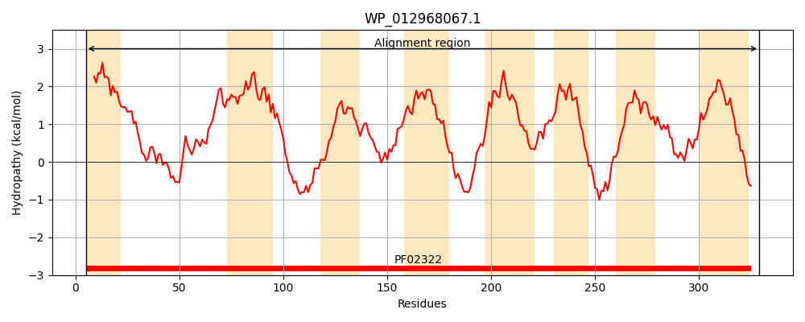
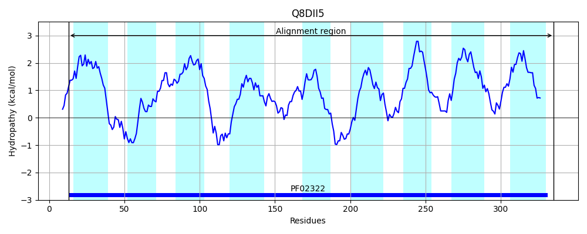
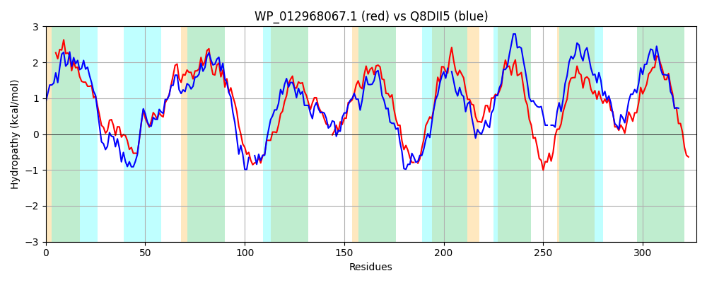

Hit Accession: Q8DII5
Hit TCID: 3.D.4.3.4
Hit Description: gnl|BL_ORD_ID|16001 gnl|TC-DB|Q8DII5|3.D.4.3.4 Cytochrome oxidase d subunit II OS=Thermosynechococcus elongatus (strain BP-1) GN=cydB PE=4 SV=1
Mach Len: 327
e:0.000000
Query TMS Count : 8
Hit TMS Count: 9
TMS-Overlap Score: 7.550000
Predicted Substrates:CHEBI:5584;hydron
BLAST Alignment:
Score: 660 , Bit scores: 258 bits, E-value: 1.1e-84, Alignment length: 327, Percentage identity: 43
Query: 5 LSVIWFVIIVFATLMYIVMDGFDLGIGMLFGTVRGSTERDVMVNSVAPVWDGNETWLVLGGAGLFGAFPLAYAVIIDALSIPLTLMLIGLIFRGVAFEFRFQATPSHRPFWDRAFFGGSLLATFSQGVVVGAVINGFPVSGRS-FSGGMFDWLTPFSLFCGLGLCVAYALLGATWLVMKSEGALQQ-RMRSASRQLLVALLAVFAVISLWTPLAHPAIAARWFSLPNLYFLLPVPLLVILISGWLWRTLHQRDRHVSPFTLTLGLVFLGFSGLGISIWPHIIPPAITLWQAAAPPQSQGFMLVGALLIIPVILGYTCWSYYVFRGKV 329
L +WF I+ +YI++DGFDLGIG+L T R++++ S+ VWD NETWLVL G LFGAFPLAYA I++AL +P +M++GLI R V+FEFR A +++ W+ AF GS LA QG VG V G V F+GG++DWLT SL L L Y L+G+T+L+ K+ G LQQ R+A+ + +I++ P+ H + A+ F P Y +PLL +L+ L R+L +R+ V P T L L F GLG I+P+IIPP++T+++A+A P +Q FML+ +IP++L Y ++Y VFRGKV
Sbjct: 13 LPQVWFFILGLFLFLYILLDGFDLGIGILSLTSSNERRRNILMTSLGNVWDANETWLVLMGGSLFGAFPLAYATILNALYLPAVIMVVGLILRAVSFEFRENA--NNKRVWNLAFGIGSFLAALGQGFAVGTVFEGIKVDAAGHFAGGIWDWLTWHSLLVALTLIQGYVLIGSTYLIYKTTGELQQTHYRTATIAAWTTFIGA-VLITITAPIFHEQLRAQLFQPPLFYIFAAIPLLGVLLIFLLLRSLQKRE-EVMPLVWTFLLFLLSFIGLGFVIFPNIIPPSVTIYEASASPSAQVFMLIFVAFLIPIMLAYNLYNYLVFRGKV 335 | Protein Hydropathy Plots: |
|---|
|  |  |
Pairwise Alignment-Hydropathy Plot:
|
|---|
|  |